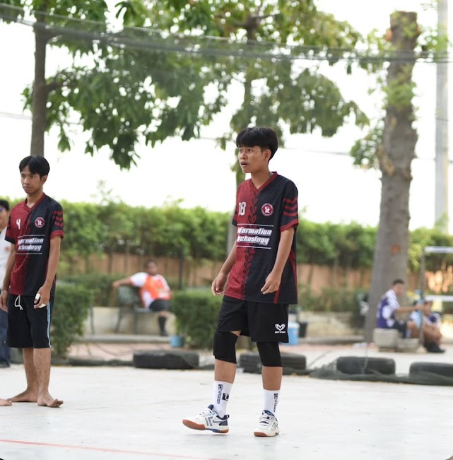

ABOUT ME
เกี่ยวกับฉัน
ข้อมูลส่วนตัวและสิ่งที่ผมสนใจ

นพดล แตงกลับ
นักเรียนสาขาเทคโนโลยีสารสนเทศ
"เรียนรู้ พัฒนา และสร้างสรรค์สิ่งใหม่ ๆ อยู่เสมอ"
01 / ประวัติส่วนตัว
ชื่อเล่น
เจมส์
ชื่อ-นามสกุล
นพดล แตงกลับ
ระดับการศึกษา
ปวช.2
สาขาวิชา
เทคโนโลยีสารสนเทศ
สถานศึกษา
วิทยาลัยเทคนิคสิงห์บุรี
02 / ความสนใจ
สนใจด้านคอมพิวเตอร์ เทคโนโลยี การเขียนโปรแกรม และการพัฒนาเว็บไซต์ รวมถึงการเรียนรู้เครื่องมือใหม่ ๆ
03 / งานอดิเรก
เล่นเกม ฟังเพลง และศึกษาความรู้ใหม่ ๆ เกี่ยวกับเทคโนโลยีสารสนเทศ
04 / เป้าหมายในอนาคต
ต้องการพัฒนาทักษะด้าน IT เพื่อนำความรู้ไปต่อยอด ในการทำงานและสร้างธุรกิจของตนเอง